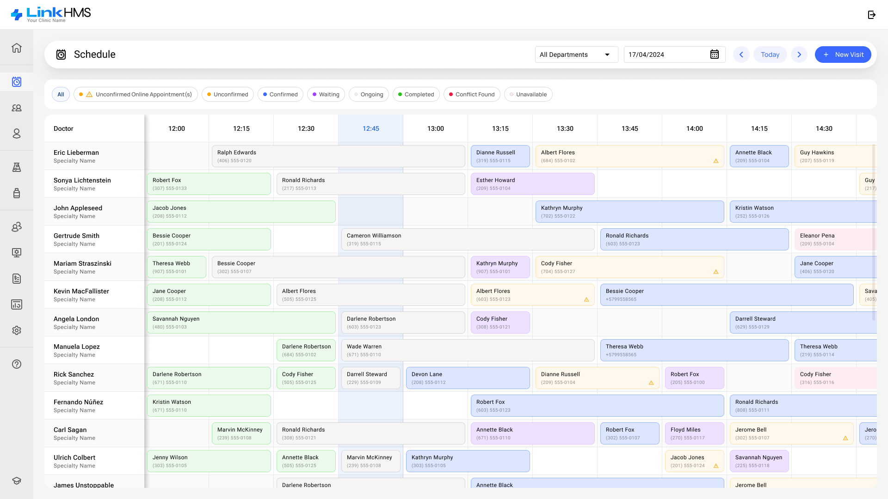
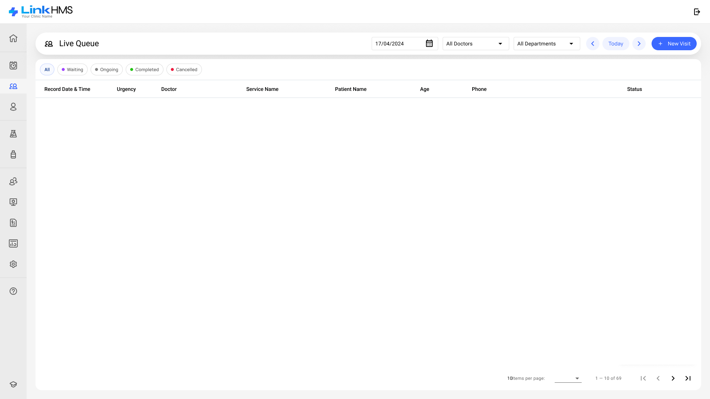

Start Visit
Complete Visit
Convert to Admission
View Patient Profile
Edit
Cancel
 Convert to Admission
Convert to Admission View Patient ProfileConvert to AdmissionView Patient Profile
View Patient ProfileConvert to AdmissionView Patient Profile